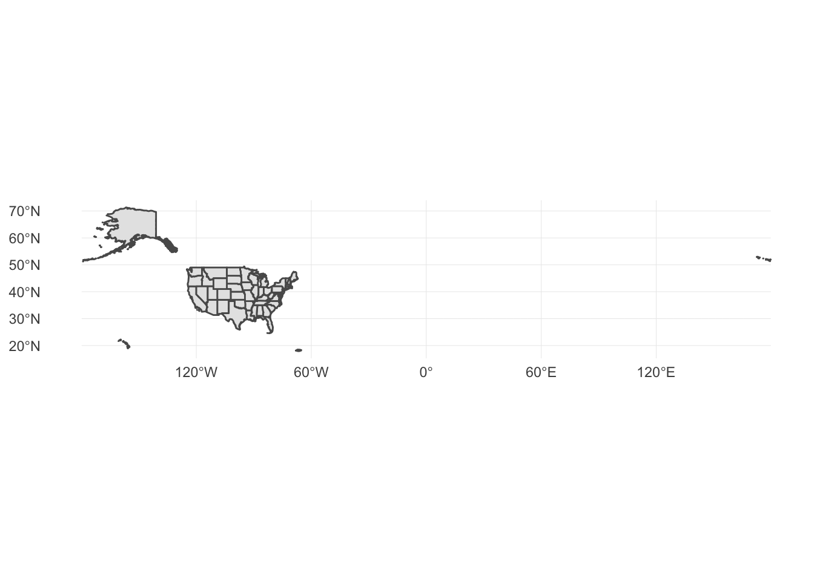
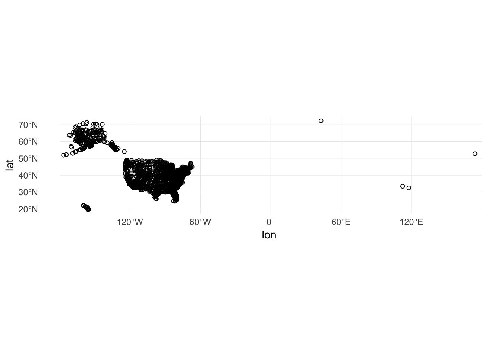

Drawing vector maps with ggplot2 and sf
library(tidyverse)
library(sf)
library(here)
options(digits = 3)
set.seed(1234)
theme_set(theme_minimal())Unlike raster image maps, vector maps require you to obtain spatial data files which contain detailed information necessary to draw all the components of a map (e.g. points, lines, polygons). Once you successfully import that data into R, ggplot2 works with simple features data frames to easily generate geospatial visualizations using all the core elements and approaches of ggplot().
Import USA state boundaries
First we will import a spatial data file containing the boundaries of all 50 states in the United States1 using sf::st_read():
usa <- st_read("data/census_bureau/cb_2013_us_state_20m/cb_2013_us_state_20m.shp")## Reading layer `cb_2013_us_state_20m' from data source `/Users/soltoffbc/Projects/Computing for Social Sciences/uc-cfss.github.io/data/census_bureau/cb_2013_us_state_20m/cb_2013_us_state_20m.shp' using driver `ESRI Shapefile'
## Simple feature collection with 52 features and 9 fields
## geometry type: MULTIPOLYGON
## dimension: XY
## bbox: xmin: -179 ymin: 17.9 xmax: 180 ymax: 71.4
## epsg (SRID): 4269
## proj4string: +proj=longlat +datum=NAD83 +no_defsDraw the boundaries
ggplot2 contains a geometric object specifically for simple feature objects called geom_sf(). This works reasonably well when you need to draw polygons, like our state boundaries. Support for simple features in ggplot2 is under active development, so you may not find adequate support for plotting line or point features. To draw the map, we pass the simple features data frame as the data argument.
ggplot(data = usa) +
geom_sf()
Because simple features data frames are standardized with the geometry column always containing information on the geographic coordinates of the features, we do not need to specify additional parameters for aes(). Notice a problem with the map above: it wastes a lot of space. This is caused by the presence of Alaska and Hawaii in the dataset. The Aleutian Islands cross the the 180th meridian, requiring the map to show the Eastern hemisphere. Likewise, Hawaii is substantially distant from the continental United States.
Plot a subset of a map
One solution is to plot just the lower 48 states. That is, exclude Alaska and Hawaii, as well as DC and Puerto Rico.2 Because simple features data frames contain one row per feature and in this example a feature is defined as a state, we can use filter() from dplyr to exclude these four states/territories.
(usa_48 <- usa %>%
filter(!(NAME %in% c("Alaska", "District of Columbia", "Hawaii", "Puerto Rico"))))## Simple feature collection with 48 features and 9 fields
## geometry type: MULTIPOLYGON
## dimension: XY
## bbox: xmin: -125 ymin: 24.5 xmax: -66.9 ymax: 49.4
## epsg (SRID): 4269
## proj4string: +proj=longlat +datum=NAD83 +no_defs
## First 10 features:
## STATEFP STATENS AFFGEOID GEOID STUSPS NAME LSAD ALAND
## 1 01 01779775 0400000US01 01 AL Alabama 00 1.31e+11
## 2 05 00068085 0400000US05 05 AR Arkansas 00 1.35e+11
## 3 06 01779778 0400000US06 06 CA California 00 4.03e+11
## 4 09 01779780 0400000US09 09 CT Connecticut 00 1.25e+10
## 5 12 00294478 0400000US12 12 FL Florida 00 1.39e+11
## 6 13 01705317 0400000US13 13 GA Georgia 00 1.49e+11
## 7 16 01779783 0400000US16 16 ID Idaho 00 2.14e+11
## 8 17 01779784 0400000US17 17 IL Illinois 00 1.44e+11
## 9 18 00448508 0400000US18 18 IN Indiana 00 9.28e+10
## 10 20 00481813 0400000US20 20 KS Kansas 00 2.12e+11
## AWATER geometry
## 1 4.59e+09 MULTIPOLYGON (((-88.3 30.2,...
## 2 2.96e+09 MULTIPOLYGON (((-94.6 36.5,...
## 3 2.05e+10 MULTIPOLYGON (((-119 33.5, ...
## 4 1.82e+09 MULTIPOLYGON (((-73.7 41.1,...
## 5 3.14e+10 MULTIPOLYGON (((-80.7 24.9,...
## 6 4.95e+09 MULTIPOLYGON (((-85.6 35, -...
## 7 2.40e+09 MULTIPOLYGON (((-117 44.4, ...
## 8 6.20e+09 MULTIPOLYGON (((-91.5 40.2,...
## 9 1.54e+09 MULTIPOLYGON (((-88.1 37.9,...
## 10 1.35e+09 MULTIPOLYGON (((-102 40, -1...ggplot(data = usa_48) +
geom_sf()
Since the map is a ggplot() object, it can easily be modified like any other ggplot() graph. We could change the color of the map and the borders:
ggplot(data = usa_48) +
geom_sf(fill = "palegreen", color = "black")
fiftystater
Rather than excluding them entirely, most maps of the United States place Alaska and Hawaii as insets to the south of California. Until recently, in R this was an extremely tedious task that required manually changing the latitude and longitude coordinates for these states to place them in the correct location. Fortunately several packages are now available that have already done the work for you. albersusa includes the usa_sf() function which returns a simple features data frame which contains adjusted coordinates for Alaska and Hawaii to plot them with the mainland. It can be installed from GitHub using devtools::install_github("hrbrmstr/albersusa").
library(albersusa)
usa_sf()## Simple feature collection with 51 features and 13 fields
## geometry type: MULTIPOLYGON
## dimension: XY
## bbox: xmin: -125 ymin: 20.6 xmax: -66.9 ymax: 49.4
## epsg (SRID): 4326
## proj4string: +proj=longlat +datum=WGS84 +no_defs
## First 10 features:
## geo_id fips_state name lsad census_area iso_3166_2
## 1 0400000US04 04 Arizona 113594 AZ
## 2 0400000US05 05 Arkansas 52035 AR
## 3 0400000US06 06 California 155779 CA
## 4 0400000US08 08 Colorado 103642 CO
## 5 0400000US09 09 Connecticut 4842 CT
## 6 0400000US11 11 District of Columbia 61 DC
## 7 0400000US13 13 Georgia 57513 GA
## 8 0400000US17 17 Illinois 55519 IL
## 9 0400000US18 18 Indiana 35826 IN
## 10 0400000US22 22 Louisiana 43204 LA
## census pop_estimataes_base pop_2010 pop_2011 pop_2012 pop_2013
## 1 6392017 6392310 6411999 6472867 6556236 6634997
## 2 2915918 2915958 2922297 2938430 2949300 2958765
## 3 37253956 37254503 37336011 37701901 38062780 38431393
## 4 5029196 5029324 5048575 5119661 5191709 5272086
## 5 3574097 3574096 3579345 3590537 3594362 3599341
## 6 601723 601767 605210 620427 635040 649111
## 7 9687653 9688681 9714464 9813201 9919000 9994759
## 8 12830632 12831587 12840097 12858725 12873763 12890552
## 9 6483802 6484192 6490308 6516560 6537632 6570713
## 10 4533372 4533479 4545581 4575972 4604744 4629284
## pop_2014 geometry
## 1 6731484 MULTIPOLYGON (((-113 37, -1...
## 2 2966369 MULTIPOLYGON (((-94 33, -94...
## 3 38802500 MULTIPOLYGON (((-120 34, -1...
## 4 5355866 MULTIPOLYGON (((-107 41, -1...
## 5 3596677 MULTIPOLYGON (((-72.4 42, -...
## 6 658893 MULTIPOLYGON (((-77 38.8, -...
## 7 10097343 MULTIPOLYGON (((-84.8 35, -...
## 8 12880580 MULTIPOLYGON (((-89.4 42.5,...
## 9 6596855 MULTIPOLYGON (((-84.8 40.4,...
## 10 4649676 MULTIPOLYGON (((-88.9 29.8,...ggplot(data = usa_sf()) +
geom_sf()
Add data to the map
Region boundaries serve as the background in geospatial data visualization - so now we need to add data. Some types of geographic data (points and symbols) are overlaid on top of the boundaries, whereas other data (fill) are incorporated into the region layer itself.
Points
Let’s use our usa_48 map data to add some points. The airports data frame in the nycflights13 package includes geographic info on airports in the United States.
library(nycflights13)
airports## # A tibble: 1,458 x 8
## faa name lat lon alt tz dst tzone
## <chr> <chr> <dbl> <dbl> <int> <dbl> <chr> <chr>
## 1 04G Lansdowne Airport 41.1 -80.6 1044 -5 A America/New_…
## 2 06A Moton Field Municip… 32.5 -85.7 264 -6 A America/Chic…
## 3 06C Schaumburg Regional 42.0 -88.1 801 -6 A America/Chic…
## 4 06N Randall Airport 41.4 -74.4 523 -5 A America/New_…
## 5 09J Jekyll Island Airpo… 31.1 -81.4 11 -5 A America/New_…
## 6 0A9 Elizabethton Munici… 36.4 -82.2 1593 -5 A America/New_…
## 7 0G6 Williams County Air… 41.5 -84.5 730 -5 A America/New_…
## 8 0G7 Finger Lakes Region… 42.9 -76.8 492 -5 A America/New_…
## 9 0P2 Shoestring Aviation… 39.8 -76.6 1000 -5 U America/New_…
## 10 0S9 Jefferson County In… 48.1 -123. 108 -8 A America/Los_…
## # ... with 1,448 more rowsEach airport has it’s geographic location encoded through lat and lon. To draw these points on the map, basically we draw a scatterplot with x = lon and y = lat. In fact we could simply do that:
ggplot(airports, aes(lon, lat)) +
geom_point()
Let’s overlay it with the mapped state borders:
ggplot(data = usa_48) +
geom_sf() +
geom_point(data = airports, aes(x = lon, y = lat), shape = 1)
Slight problem. We have airports listed outside of the continental United States. There are a couple ways to rectify this. Unfortunately airports does not include a variable identifying state so the filter() operation is not that simple. The easiest solution is to crop the limits of the graph using coord_sf() to only show the mainland:
ggplot(data = usa_48) +
geom_sf() +
geom_point(data = airports, aes(x = lon, y = lat), shape = 1) +
coord_sf(xlim = c(-130, -60),
ylim = c(20, 50))
Alternatively, we can use st_as_sf() to convert airports to a simple features data frame.
airports_sf <- st_as_sf(airports, coords = c("lon", "lat"))
st_crs(airports_sf) <- 4326 # set the coordinate reference system
airports_sf## Simple feature collection with 1458 features and 6 fields
## geometry type: POINT
## dimension: XY
## bbox: xmin: -177 ymin: 19.7 xmax: 174 ymax: 72.3
## epsg (SRID): 4326
## proj4string: +proj=longlat +datum=WGS84 +no_defs
## # A tibble: 1,458 x 7
## faa name alt tz dst tzone geometry
## <chr> <chr> <int> <dbl> <chr> <chr> <POINT [°]>
## 1 04G Lansdowne Airp… 1044 -5 A America/N… (-80.6 41.1)
## 2 06A Moton Field Mu… 264 -6 A America/C… (-85.7 32.5)
## 3 06C Schaumburg Reg… 801 -6 A America/C… (-88.1 42)
## 4 06N Randall Airport 523 -5 A America/N… (-74.4 41.4)
## 5 09J Jekyll Island … 11 -5 A America/N… (-81.4 31.1)
## 6 0A9 Elizabethton M… 1593 -5 A America/N… (-82.2 36.4)
## 7 0G6 Williams Count… 730 -5 A America/N… (-84.5 41.5)
## 8 0G7 Finger Lakes R… 492 -5 A America/N… (-76.8 42.9)
## 9 0P2 Shoestring Avi… 1000 -5 U America/N… (-76.6 39.8)
## 10 0S9 Jefferson Coun… 108 -8 A America/L… (-123 48.1)
## # ... with 1,448 more rowscoords tells st_as_sf() which columns contain the geographic coordinates of each airport. To graph the points on the map, we use a second geom_sf():
ggplot() +
geom_sf(data = usa_48) +
geom_sf(data = airports_sf, shape = 1) +
coord_sf(xlim = c(-130, -60),
ylim = c(20, 50))
Symbols
We can change the size or type of symbols on the map. For instance, we can draw a bubble plot (also known as a proportional symbol map) and encode the altitude of the airport through the size channel:
ggplot(data = usa_48) +
geom_sf() +
geom_point(data = airports, aes(x = lon, y = lat, size = alt),
fill = "grey", color = "black", alpha = .2) +
coord_sf(xlim = c(-130, -60),
ylim = c(20, 50)) +
scale_size_area(guide = FALSE)
Circle area is proportional to the airport’s altitude (in feet). Or we could scale it based on the number of arriving flights in flights:
airports_n <- flights %>%
count(dest) %>%
left_join(airports, by = c("dest" = "faa"))
ggplot(data = usa_48) +
geom_sf() +
geom_point(data = airports_n, aes(x = lon, y = lat, size = n),
fill = "grey", color = "black", alpha = .2) +
coord_sf(xlim = c(-130, -60),
ylim = c(20, 50)) +
scale_size_area(guide = FALSE)
airportscontains a list of virtually all commercial airports in the United States. Howeverflightsonly contains data on flights departing from New York City airports (JFK, LaGuardia, or Newark) and only services a few airports around the country.
Fill (choropleths)
Choropleth maps encode information by assigning shades of colors to defined areas on a map (e.g. countries, states, counties, zip codes). There are lots of ways to tweak and customize these graphs, which is generally a good idea because remember that color is one of the harder-to-decode channels.
We will continue to use the usa_48 simple features data frame and draw a choropleth for the number of foreign-born individuals in each state. We get those files from the census_bureau folder. Let’s also normalize our measure by the total population to get the rate of foreign-born individuals in the population:
(fb_state <- here("data", "census_bureau", "ACS_13_5YR_B05012_state", "ACS_13_5YR_B05012.csv") %>%
read_csv() %>%
mutate(rate = HD01_VD03 / HD01_VD01))## # A tibble: 51 x 10
## GEO.id GEO.id2 `GEO.display-la… HD01_VD01 HD02_VD01 HD01_VD02 HD02_VD02
## <chr> <chr> <chr> <dbl> <lgl> <dbl> <dbl>
## 1 04000… 01 Alabama 4799277 NA 4631045 2881
## 2 04000… 02 Alaska 720316 NA 669941 1262
## 3 04000… 04 Arizona 6479703 NA 5609835 7725
## 4 04000… 05 Arkansas 2933369 NA 2799972 2568
## 5 04000… 06 California 37659181 NA 27483342 30666
## 6 04000… 08 Colorado 5119329 NA 4623809 5778
## 7 04000… 09 Connecticut 3583561 NA 3096374 5553
## 8 04000… 10 Delaware 908446 NA 831683 2039
## 9 04000… 11 District of Col… 619371 NA 534142 2017
## 10 04000… 12 Florida 19091156 NA 15392410 16848
## # … with 41 more rows, and 3 more variables: HD01_VD03 <dbl>,
## # HD02_VD03 <dbl>, rate <dbl>Join the data
Now that we have our data, we want to draw it on the map. fb_state contains one row per state, as does usa_48. Since there is a one-to-one match between the data frames, we join the data frames together first, then use that single data frame to draw the map. This differs from the approach above for drawing points because a point feature is not the same thing as a polygon feature. That is, there were more airports then there were states. Because the spatial data is stored in a data frame with one row per state, all we need to do is merge the data frames together on a column that uniquely identifies each row in each data frame.
(usa_fb <- usa_48 %>%
left_join(fb_state, by = c("STATEFP" = "GEO.id2")))## Simple feature collection with 48 features and 18 fields
## geometry type: MULTIPOLYGON
## dimension: XY
## bbox: xmin: -125 ymin: 24.5 xmax: -66.9 ymax: 49.4
## epsg (SRID): 4269
## proj4string: +proj=longlat +datum=NAD83 +no_defs
## First 10 features:
## STATEFP STATENS AFFGEOID GEOID STUSPS NAME LSAD ALAND
## 1 01 01779775 0400000US01 01 AL Alabama 00 1.31e+11
## 2 05 00068085 0400000US05 05 AR Arkansas 00 1.35e+11
## 3 06 01779778 0400000US06 06 CA California 00 4.03e+11
## 4 09 01779780 0400000US09 09 CT Connecticut 00 1.25e+10
## 5 12 00294478 0400000US12 12 FL Florida 00 1.39e+11
## 6 13 01705317 0400000US13 13 GA Georgia 00 1.49e+11
## 7 16 01779783 0400000US16 16 ID Idaho 00 2.14e+11
## 8 17 01779784 0400000US17 17 IL Illinois 00 1.44e+11
## 9 18 00448508 0400000US18 18 IN Indiana 00 9.28e+10
## 10 20 00481813 0400000US20 20 KS Kansas 00 2.12e+11
## AWATER GEO.id GEO.display-label HD01_VD01 HD02_VD01 HD01_VD02
## 1 4.59e+09 0400000US01 Alabama 4799277 <NA> 4631045
## 2 2.96e+09 0400000US05 Arkansas 2933369 <NA> 2799972
## 3 2.05e+10 0400000US06 California 37659181 <NA> 27483342
## 4 1.82e+09 0400000US09 Connecticut 3583561 <NA> 3096374
## 5 3.14e+10 0400000US12 Florida 19091156 <NA> 15392410
## 6 4.95e+09 0400000US13 Georgia 9810417 <NA> 8859747
## 7 2.40e+09 0400000US16 Idaho 1583364 <NA> 1489560
## 8 6.20e+09 0400000US17 Illinois 12848554 <NA> 11073828
## 9 1.54e+09 0400000US18 Indiana 6514861 <NA> 6206801
## 10 1.35e+09 0400000US20 Kansas 2868107 <NA> 2677007
## HD02_VD02 HD01_VD03 HD02_VD03 rate geometry
## 1 2881 168232 2881 0.0351 MULTIPOLYGON (((-88.3 30.2,...
## 2 2568 133397 2568 0.0455 MULTIPOLYGON (((-94.6 36.5,...
## 3 30666 10175839 30666 0.2702 MULTIPOLYGON (((-119 33.5, ...
## 4 5553 487187 5553 0.1360 MULTIPOLYGON (((-73.7 41.1,...
## 5 16848 3698746 16848 0.1937 MULTIPOLYGON (((-80.7 24.9,...
## 6 7988 950670 7988 0.0969 MULTIPOLYGON (((-85.6 35, -...
## 7 2528 93804 2528 0.0592 MULTIPOLYGON (((-117 44.4, ...
## 8 10091 1774726 10093 0.1381 MULTIPOLYGON (((-91.5 40.2,...
## 9 4499 308060 4500 0.0473 MULTIPOLYGON (((-88.1 37.9,...
## 10 3095 191100 3100 0.0666 MULTIPOLYGON (((-102 40, -1...Draw the map
With the newly combined data frame, use geom_sf() and define the fill aesthetic based on the column in usa_fb you want to visualize.
ggplot(data = usa_fb) +
geom_sf(aes(fill = rate))
Bin data to discrete intervals
When creating a heatmap with a continuous variable, one must decide whether to keep the variable as continuous or collapse it into a series of bins with discrete colors. While keep the variable continuous is technically more precise, the human eye cannot usually distinguish between two colors which are very similar to one another. By converting the variable to a discrete variable, you easily distinguish between the different levels. If you decide to convert a continuous variable to a discrete variable, you will need to decide how to do this. While cut() is a base R function for converting continuous variables into discrete values, ggplot2 offers two functions that explicitly define how we want to bin the numeric vector (column).
cut_interval() makes n groups with equal range:
usa_fb %>%
mutate(rate_cut = cut_interval(rate, 6)) %>%
ggplot() +
geom_sf(aes(fill = rate_cut))
Whereas cut_number() makes n groups with (approximately) equal numbers of observations:
usa_fb %>%
mutate(rate_cut = cut_number(rate, 6)) %>%
ggplot() +
geom_sf(aes(fill = rate_cut))
See this StackOverflow thread for a more in-depth discussion on the merits of bucketizing a continuous variable and whether to use
cut_interval()orcut_number().
Changing map projection

Representing portions of the globe on a flat surface can be challenging. Depending on how you project the map, you can distort or emphasize certain features of the map. Fortunately, ggplot() includes the coord_sf() function which allows us to easily implement different projection methods. In order to implement coordinate transformations, you need to know the coordinate reference system that defines the projection method. The “easiest” approach is to provide what is known as the proj4string that defines the projection method. PROJ4 is a generic coordinate transformation software that allows you to convert between projection methods. If you get really into geospatial analysis and visualization, it is helpful to learn this system.
For our purposes here, proj4string is a character string in R that defines the coordinate system and includes parameters specific to a given coordinate transformation. PROJ4 includes some documentation on common projection methods that can get you started. Some projection methods are relatively simple and require just the name of the projection, like for a Mercator projection ("+proj=merc"):
map_proj_base <- ggplot(data = usa_48) +
geom_sf()map_proj_base +
coord_sf(crs = "+proj=merc") +
ggtitle("Mercator projection")
Other coordinate systems require specification of the standard lines, or lines that define areas of the surface of the map that are tangent to the globe. These include Gall-Peters, Albers equal-area, and Lambert azimuthal.
map_proj_base +
coord_sf(crs = "+proj=cea +lon_0=0 +lat_ts=45") +
ggtitle("Gall-Peters projection")
map_proj_base +
coord_sf(crs = "+proj=aea +lat_1=25 +lat_2=50 +lon_0=-100") +
ggtitle("Albers equal-area projection")
map_proj_base +
coord_sf(crs = "+proj=laea +lat_0=35 +lon_0=-100") +
ggtitle("Lambert azimuthal projection")
Session Info
devtools::session_info()## ─ Session info ──────────────────────────────────────────────────────────
## setting value
## version R version 3.5.2 (2018-12-20)
## os macOS Mojave 10.14.3
## system x86_64, darwin15.6.0
## ui X11
## language (EN)
## collate en_US.UTF-8
## ctype en_US.UTF-8
## tz America/Chicago
## date 2019-03-02
##
## ─ Packages ──────────────────────────────────────────────────────────────
## package * version date lib
## albersusa * 0.3.1 2019-02-26 [1]
## assertthat 0.2.0 2017-04-11 [2]
## backports 1.1.3 2018-12-14 [2]
## base64enc 0.1-3 2015-07-28 [2]
## bindr 0.1.1 2018-03-13 [2]
## bindrcpp * 0.2.2 2018-03-29 [1]
## broom 0.5.1 2018-12-05 [2]
## callr 3.1.1 2018-12-21 [2]
## cellranger 1.1.0 2016-07-27 [2]
## class 7.3-15 2019-01-01 [2]
## classInt 0.3-1 2018-12-18 [2]
## cli 1.0.1 2018-09-25 [1]
## codetools 0.2-16 2018-12-24 [2]
## colorspace 1.4-0 2019-01-13 [2]
## crayon 1.3.4 2017-09-16 [2]
## DBI 1.0.0 2018-05-02 [2]
## desc 1.2.0 2018-05-01 [2]
## devtools 2.0.1 2018-10-26 [1]
## digest 0.6.18 2018-10-10 [1]
## dplyr * 0.8.0.1 2019-02-15 [1]
## e1071 1.7-0.1 2019-01-21 [1]
## evaluate 0.13 2019-02-12 [2]
## fansi 0.4.0 2018-10-05 [2]
## fiftystater * 1.0.1 2016-11-14 [2]
## forcats * 0.4.0 2019-02-17 [2]
## foreign 0.8-71 2018-07-20 [2]
## fs 1.2.6 2018-08-23 [1]
## generics 0.0.2 2018-11-29 [1]
## ggplot2 * 3.1.0 2018-10-25 [1]
## glue 1.3.0 2018-07-17 [2]
## gtable 0.2.0 2016-02-26 [2]
## haven 2.1.0 2019-02-19 [2]
## here * 0.1 2017-05-28 [2]
## hms 0.4.2 2018-03-10 [2]
## htmltools 0.3.6 2017-04-28 [1]
## httr 1.4.0 2018-12-11 [2]
## jsonlite 1.6 2018-12-07 [2]
## knitr 1.21 2018-12-10 [2]
## lattice 0.20-38 2018-11-04 [2]
## lazyeval 0.2.1 2017-10-29 [2]
## lubridate 1.7.4 2018-04-11 [2]
## magrittr 1.5 2014-11-22 [2]
## maptools 0.9-5 2019-02-18 [1]
## memoise 1.1.0 2017-04-21 [2]
## modelr 0.1.4 2019-02-18 [2]
## munsell 0.5.0 2018-06-12 [2]
## nlme 3.1-137 2018-04-07 [2]
## nycflights13 * 1.0.0 2018-06-26 [2]
## pillar 1.3.1 2018-12-15 [2]
## pkgbuild 1.0.2 2018-10-16 [1]
## pkgconfig 2.0.2 2018-08-16 [2]
## pkgload 1.0.2 2018-10-29 [1]
## plyr 1.8.4 2016-06-08 [2]
## prettyunits 1.0.2 2015-07-13 [2]
## processx 3.2.1 2018-12-05 [2]
## ps 1.3.0 2018-12-21 [2]
## purrr * 0.3.0 2019-01-27 [2]
## R6 2.4.0 2019-02-14 [1]
## Rcpp 1.0.0 2018-11-07 [1]
## readr * 1.3.1 2018-12-21 [2]
## readxl 1.3.0 2019-02-15 [2]
## remotes 2.0.2 2018-10-30 [1]
## rgdal 1.3-9 2019-02-21 [1]
## rgeos 0.4-2 2018-11-08 [1]
## rlang 0.3.1 2019-01-08 [1]
## rmarkdown 1.11 2018-12-08 [2]
## rprojroot 1.3-2 2018-01-03 [2]
## rstudioapi 0.9.0 2019-01-09 [1]
## rvest 0.3.2 2016-06-17 [2]
## scales 1.0.0 2018-08-09 [1]
## sessioninfo 1.1.1 2018-11-05 [1]
## sf * 0.7-3 2019-02-21 [1]
## sp 1.3-1 2018-06-05 [2]
## stringi 1.3.1 2019-02-13 [1]
## stringr * 1.4.0 2019-02-10 [1]
## testthat 2.0.1 2018-10-13 [2]
## tibble * 2.0.1 2019-01-12 [2]
## tidyr * 0.8.2.9000 2019-02-11 [1]
## tidyselect 0.2.5 2018-10-11 [1]
## tidyverse * 1.2.1 2017-11-14 [2]
## units 0.6-2 2018-12-05 [1]
## usethis 1.4.0 2018-08-14 [1]
## utf8 1.1.4 2018-05-24 [2]
## withr 2.1.2 2018-03-15 [2]
## xfun 0.5 2019-02-20 [1]
## xml2 1.2.0 2018-01-24 [2]
## yaml 2.2.0 2018-07-25 [2]
## source
## Github (hrbrmstr/albersusa@5b933bf)
## CRAN (R 3.5.0)
## CRAN (R 3.5.0)
## CRAN (R 3.5.0)
## CRAN (R 3.5.0)
## CRAN (R 3.5.0)
## CRAN (R 3.5.0)
## CRAN (R 3.5.0)
## CRAN (R 3.5.0)
## CRAN (R 3.5.2)
## CRAN (R 3.5.0)
## CRAN (R 3.5.0)
## CRAN (R 3.5.2)
## CRAN (R 3.5.2)
## CRAN (R 3.5.0)
## CRAN (R 3.5.0)
## CRAN (R 3.5.0)
## CRAN (R 3.5.1)
## CRAN (R 3.5.0)
## CRAN (R 3.5.2)
## CRAN (R 3.5.2)
## CRAN (R 3.5.2)
## CRAN (R 3.5.0)
## CRAN (R 3.5.0)
## CRAN (R 3.5.2)
## CRAN (R 3.5.2)
## CRAN (R 3.5.0)
## CRAN (R 3.5.0)
## CRAN (R 3.5.0)
## CRAN (R 3.5.0)
## CRAN (R 3.5.0)
## CRAN (R 3.5.2)
## CRAN (R 3.5.0)
## CRAN (R 3.5.0)
## CRAN (R 3.5.0)
## CRAN (R 3.5.0)
## CRAN (R 3.5.0)
## CRAN (R 3.5.1)
## CRAN (R 3.5.2)
## CRAN (R 3.5.0)
## CRAN (R 3.5.0)
## CRAN (R 3.5.0)
## CRAN (R 3.5.2)
## CRAN (R 3.5.0)
## CRAN (R 3.5.2)
## CRAN (R 3.5.0)
## CRAN (R 3.5.2)
## CRAN (R 3.5.0)
## CRAN (R 3.5.0)
## CRAN (R 3.5.0)
## CRAN (R 3.5.1)
## CRAN (R 3.5.0)
## CRAN (R 3.5.0)
## CRAN (R 3.5.0)
## CRAN (R 3.5.0)
## CRAN (R 3.5.0)
## CRAN (R 3.5.2)
## CRAN (R 3.5.2)
## CRAN (R 3.5.0)
## CRAN (R 3.5.0)
## CRAN (R 3.5.2)
## CRAN (R 3.5.0)
## CRAN (R 3.5.2)
## CRAN (R 3.5.0)
## CRAN (R 3.5.2)
## CRAN (R 3.5.0)
## CRAN (R 3.5.0)
## CRAN (R 3.5.2)
## CRAN (R 3.5.0)
## CRAN (R 3.5.0)
## CRAN (R 3.5.0)
## CRAN (R 3.5.2)
## CRAN (R 3.5.0)
## CRAN (R 3.5.2)
## CRAN (R 3.5.2)
## CRAN (R 3.5.0)
## CRAN (R 3.5.2)
## Github (tidyverse/tidyr@0b27690)
## CRAN (R 3.5.0)
## CRAN (R 3.5.0)
## CRAN (R 3.5.0)
## CRAN (R 3.5.0)
## CRAN (R 3.5.0)
## CRAN (R 3.5.0)
## CRAN (R 3.5.2)
## CRAN (R 3.5.0)
## CRAN (R 3.5.0)
##
## [1] /Users/soltoffbc/Library/R/3.5/library
## [2] /Library/Frameworks/R.framework/Versions/3.5/Resources/libraryThis work is licensed under the CC BY-NC 4.0 Creative Commons License.